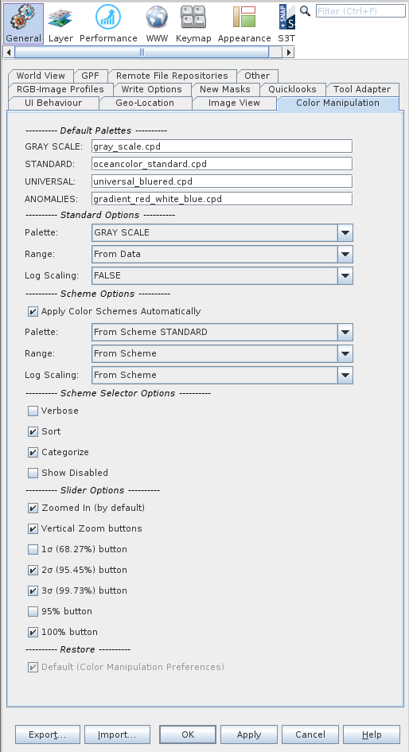

Overview
This page enables the user to modify the default settings for the Color Manipulation tool. Note: any changes made to
the
preferences will not be automatically updated until the application is either restarted or a new view window is
opened.
To open the colour manipulation preferences window select /Tools/Options/Colour Manipulation
from the main menu (Note: this may be located instead in File/Preferences on the Mac).
|  |
|
Color Manipulation preferences page
|
Default Palettes
-
GRAY SCALE: The color palette to use if the field "GRAY SCALE" is selected.
-
STANDARD: The color palette to use if the field "STANDARD" is selected. This by default is a rainbow spectrum type of palette.
-
UNIVERSAL: The color palette to use if the field "UNIVERSAL" is selected.
The universal palette field is intended for color-blind compliant palettes.
-
ANOMALIES: The color palette to use if the field "ANOMALIES" is selected. This is intended but not limited to an anomaly
type of palette.
Standard Options
This is the default behavior when opening a new band or clicking on the reset button and a color scheme is not being applied.
-
Palette: - The palette to use for the scheme.
-
GRAY SCALE: Uses the scheme as defined in the preferences field "GRAY SCALE".
-
STANDARD: Uses the scheme as defined in the preferences field "STANDARD".
-
UNIVERSAL: Uses the scheme as defined in the preferences field "UNIVERSAL".
-
ANOMALIES: Uses the scheme as defined in the preferences field "ANOMALIES".
-
Range: - The range to use.
-
From Data: Uses the range from the statistics of the data (100%).
-
From Palette File : Uses the range as defined in the palette file.
-
Log Scaling: - The log scaling to use for the scheme.
-
TRUE : Log scaling will be set to true.
-
FALSE : Log scaling will be set to false.
-
From Palette File : Uses the range as defined in the palette file. (Note cpt format files do not contain this field.)
Scheme Options
This is the behavior regarding applying color schemes when opening a new band or clicking on the reset button. If
the "Apply Color Schemes Automatically" button is clicked and the bandname matches a regular expression scheme
lookup (defined in the configuration file ~/.snap/auxdata/color_schemes/color_palette_schemes_lookup.xml) then a
color scheme is applied (palette, range, log scaling).
-
Apply Color Schemes Automatically: Automatically apply the color schemes when a band is opened or reset
button is clicked.
-
Palette: - The palette to use for the scheme.
-
From Scheme STANDARD: Uses the scheme from the configuration file defined by the parameter
"STANDARD_FILENAME".
-
From Scheme UNIVERSAL: Uses the scheme from the configuration file defined by the parameter
"UNIVERSAL_FILENAME".
The universal palette field is intended for color-blind compliant palettes.
-
GRAY SCALE: Uses the scheme as defined in the preferences field "GRAY SCALE".
-
STANDARD: Uses the scheme as defined in the preferences field "STANDARD".
-
UNIVERSAL: Uses the scheme as defined in the preferences field "UNIVERSAL".
-
ANOMALIES: Uses the scheme as defined in the preferences field "ANOMALIES".
-
Range: - The range to use for the scheme.
-
From Scheme: Uses the scheme from the configuration file defined by the parameters
"MIN" and "MAX".
-
From Data: Uses the range from the statistics of the data (100%).
-
From Palette File : Uses the range as defined in the palette file.
-
Log Scaling: - The log scaling to use for the scheme.
-
From Scheme: Uses the log scaling from the configuration file defined by the parameter "LOG_SCALE".
-
From Palette File : Uses the range as defined in the palette file. (Note cpt format files do not contain this field.)
-
TRUE : Log scaling will be set to true.
-
FALSE : Log scaling will be set to false.
Scheme Selector Options
These are options to how and what is displayed in the color scheme selector in the "Basic editor". The pre-defined
color schemes which appear in this selector are configured in the file:
~/.snap/auxdata/color_schemes/color_palette_schemes.xml.
-
Verbose: - This is the longer verbose name of the color scheme as defined by the parameter "VERBOSE_NAME"
in the configuration file.
-
Sort: - This schemes are sorted alphabetically. If sort is false then the schemes appear in the same
order
as they are defined in the configuration file.
-
Categorize: - This categorizes the display of the schemes in the selection into
"Primary Schemes" and "Additional Schemes" as determined
by the boolean parameter "PRIMARY" in the configuration file.
-
Show Disabled: - Schemes could be disabled for various reasons such as the color palette of the scheme
does not exist.
If this field is checked then those schemes will be displayed in grey. If you click on the scheme then a dialog
will
indicate why the scheme is disabled.
Sliders Editor Options
-
Histogram Zoom: - The histogram will by default be zoomed in to span the min/max range of the
color palette (sliders).
-
Show Information: - The statistical information overlay within the histogram plot window will be
displayed by default.
Button Enablement
You may customize your tool window by adding/removing a variety of tool buttons
-
1σ (68.27%) Button: Enables this button in the "sliders editor". This function
adjusts the palette range to cover 1σ (68.27%) of all pixels in the band.

-
2σ (95.45%) Button: Enables this button in the "sliders editor". This function
adjusts the palette range to cover 2σ (95.45%) of all pixels in the band.

-
3σ (99.73%) Button: Enables this button in the "sliders editor". This function
adjusts the palette range to cover 3σ (99.73%) of all pixels in the band.

-
95% Button: Enables this button in the "sliders editor". This function
adjusts the palette range to cover 95% of all pixels in the band. This is retained as a legacy function.

-
100% Button: Enables this button in the "sliders editor". This function
adjusts the palette range to cover 100% of all pixels in the band.

-
Information Button: Enables this button in the "sliders editor". This function
enable display of statistical information overlaid in the histogram plot window..

RGB Options
-
Range Button (Min): - The value at which the preset range button sets the first (minimum) point of the
color palette.

-
Range Button (Max): - The value at which the preset range button sets the last (maximum) point of the
color palette.
Restore
Restores all parameters within the Color Manipulation Preferences to the original default values.